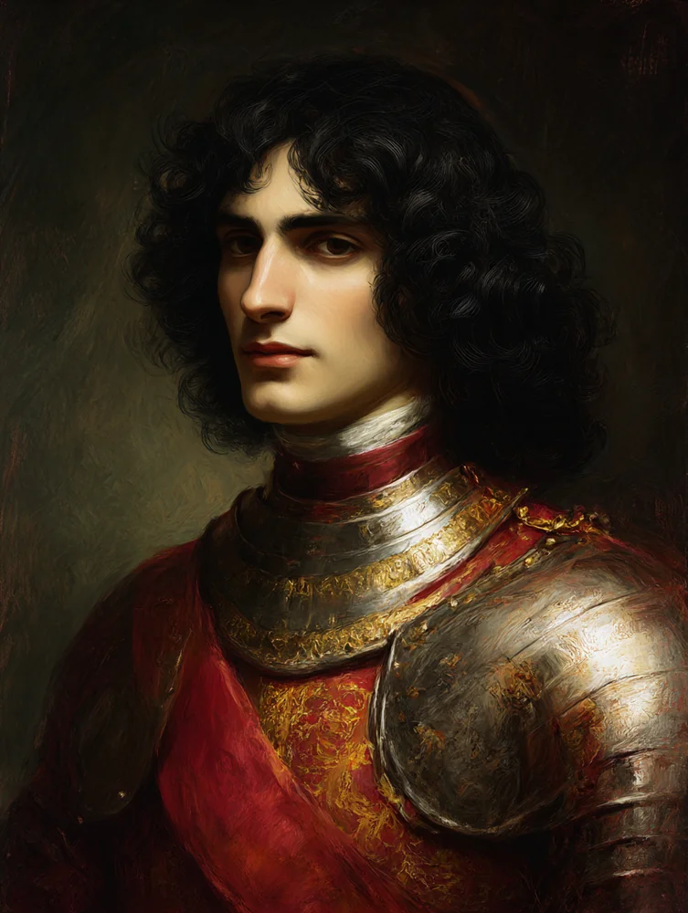
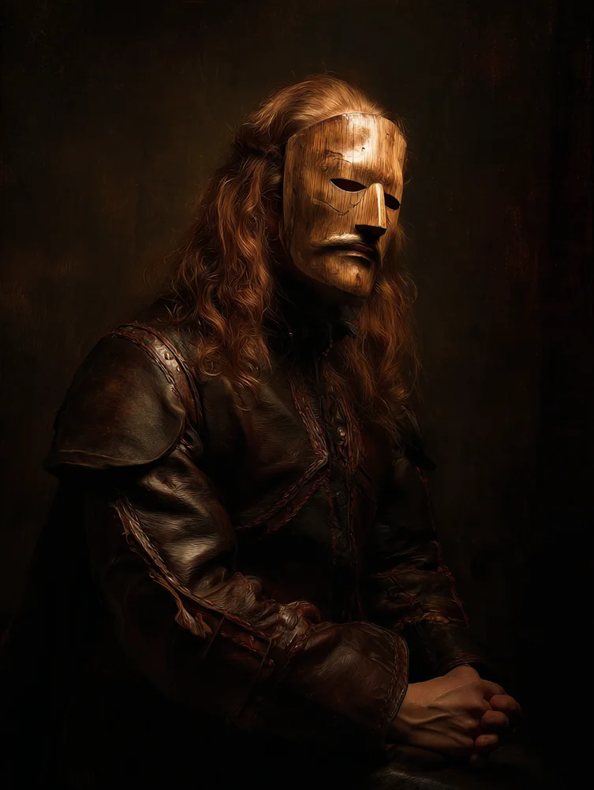

A Vampire: The Dark Ages Chronicle
War of Princes
London · 1242 · under the domain of Mithras
✦ ❧ ✦
The Codex

The London Envoy
The Coterie
The four young Cainites in Mithras's service — who they are, and where each stands with the others.

Those met on road, beach & court
Dramatis Personae
The people the envoy has met — the stowaway, the Order of Absolution, and the court of London.

A record of the nights
The Chronicle
The session log — most recent first, with the characters present tagged in every scene.

Tzimisce Household of Białowieży
The Household Dossier
Tomisława in full — her sheet, her ghoul-husband the Graf, the four allies, and the herd that feeds her.